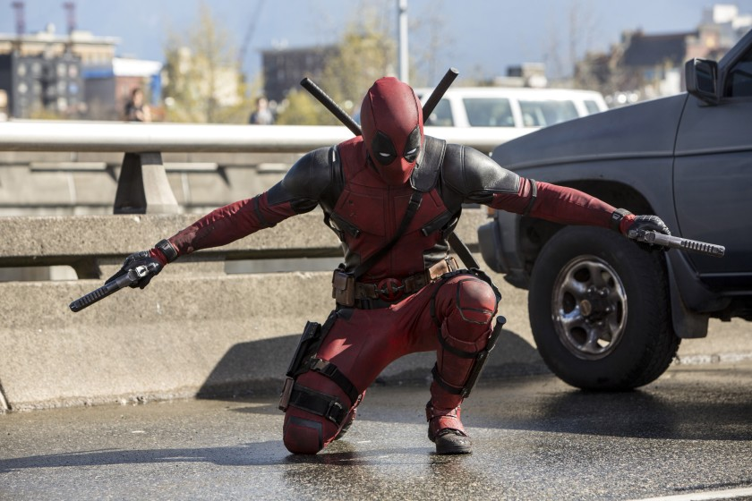

Deadpool Backstory
Deadpool is a mutant hero from the Marvel comics. Wade Wilson, a chatty mercenary is diagnosed with terminal cancer. In order to cure the cancer, he desperatley undergoes an experimental procedure that saves his life but at the same, he receives a healing ability, in other words, renegeneration. Though, the procedure changed his appearance drastically, making him look an abomination which made him lonely and avoided by everyone, he becomes a superhero, by using his abilities for good. He also has the tendancy to do bad. So, he's a technically an ANTIHERO
Deadpool fighting on a bridge
- Skilled Swordsman and Marksman
- Imortality
- Superhuman Agility, Strength and Stamina
- For more of his powers, Click Here
- Fights using swords, guns and lots of exploding devices
- Has a variety of martil arts skills
Deadpool's Characteristics
Deadpool's Friends
Deadpool has many awkward friendships due to his attitude, but after forming the X-Force, he has a lot of good team mates (or friends as you can call them) Below are 3 members of the X-Force